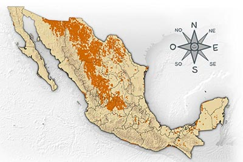
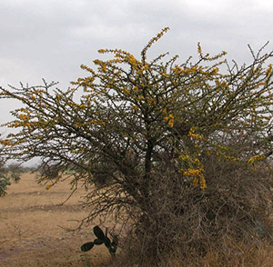
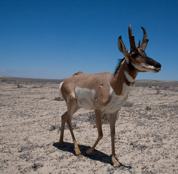
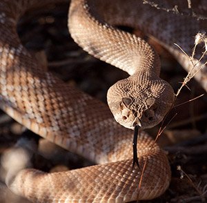
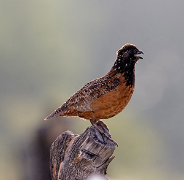
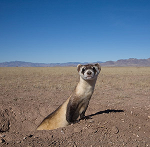
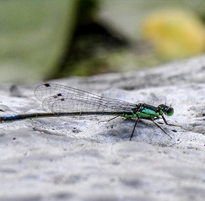
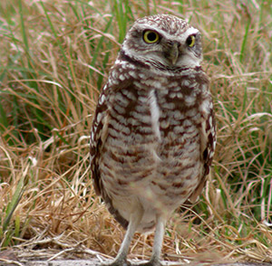
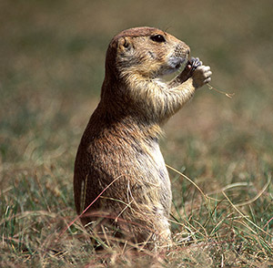
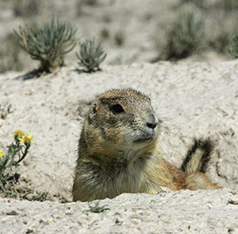

En este ecosistema los pastos son muy abundantes y hay muy pocos arbustos y árboles. Al igual que en los matorrales hace calor durante el día y frío durante la noche, y por eso la mayoría de los animales se alimentan por la mañana y por la tarde.

Huizache

Huizachito soy mis niños aplanado del copete te invito a que seas mí amigo hoy, mañana y para siempre. Soy un arbolito de la familia del frijol. Mis hojas son pequeñitas y la forma de mi copa es aplanada. Tengo grandes espinas y mis flores amarillas en forma de esferitas son visitadas por muchos insectos que buscan néctar, que no es por presumir pero sabe... ¡riquísimo!
Berrendo

Soy el animal terrestre más veloz de México. ¡Puedo correr a más de 100 km por hora! ¿Unas carreritas? Me parezco a los venados pero no somos parientes. Vivo en grupos en el norte del país y me alimento de pastos y otras hierbas. Para que me alcance un depredador está difícil, a menos que me encuentren distraído.
Bisonte
Soy el animal terrestre de mayor tamaño en México. Vivía en grandes grupos llamados manadas, que caminaban por todo el norte de América. Actualmente los grupos son pequeños y vivimos en áreas reducidas. Me alimento de pasto. Cuando se acerca algún depredador a intentar comerse algún bebé, los adultos lo protegemos.
Víbora de Cascabel de Diamantes

Soy un reptil carnívoro. Con mi potente veneno puedo inmovilizar a mis presas en minutos. Me encantan los roedores de todos tamaños, pero también le entro a aves y lagartijas. Cuando se me acerca otro depredador lo prevengo con el sonido de mi cascabel.
Codorniz Mascarita

Soy una codorniz y vivo en grupos de hasta 30 familiares. Me alimento de pequeños insectos y de nutritivas semillas. El color de mis plumas me ayuda a esconderme, ya que muchos depredadores, como zorras, coyotes, mapaches, gavilanes y tecolotes, me persiguen.
Hurón de Patas Negras

Aunque me ves pequeño, los perritos llaneros tiemblan al verme. Soy un mamífero muy, pero muy carnívoro y me puedo meter a sus madrigueras a sacarlos. Afortunadamente para los perritos, somos muy poco abundantes.
Libélula

Soy un insecto volador de atractivos colores. Siempre estoy cerca del agua, ya que ahí pongo mis huevecillos. Desde chiquita, cuando soy larva, en el agua soy una feroz depredadora. De adulto me alimento de tiernas moscas y mosquitos que agarro en mis vuelos acrobáticos.
Tecolote Llanero

Vivimos en parejas y anidamos en agujeros hechos en el suelo por otras especies, como los perritos llaneros, que me caen muy bien porque me ahorran trabajo. Ahí ponemos entre 4 y 12 huevos. Nos alimentamos de lagartijas, chapulines, arañas, alacranes y termitas. ¡Nada más de platicarlo se me hace agua el pico!
Perrito Llanero Cola Negra

Somos muy parecidos a nuestros parientes del oriente, pero tenemos la punta de la cola negra. Nos alimentos de plantas y algunos insectos. Nos llaman perritos por que los sonidos que producimos cuando estamos alarmados parecen ladridos. Pasamos mucho tiempo vigilando nuestros alrededores ya que tenemos muchos depredadores.
Perrito Llanero Mexicano

Somos parientes de las ardillas, pero vivimos en grandes colonias. Nos alimentamos principalmente de plantas y semillas y uno que otro insecto. Siempre estamos vigilantes de las zorritas, coyotes y halcones y cuando se acercan demasiado, damos un grito de alarma: ¡Aguas, aguas! y nos escondemos de volada en la madriguera.